Kebab signature + frites paprika + boisson
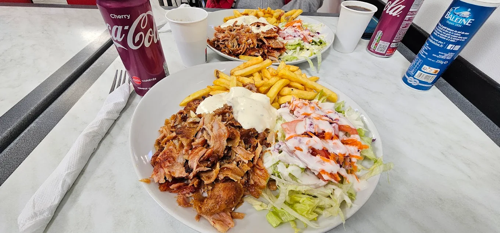
Kebab Franco-Turc · Centre-ville
Le kebab de caractere au coeur de Saint-Pol-de-Leon.
Broche maison, kebabs, burgers et salades a petit prix, servis vite au centre-ville dans une ambiance plus nette, plus chaude et facile a retenir.
4,8/5 sur Tripadvisor 491 J'aime sur Facebook
Notre histoire
Les infos publiques disponibles en ligne decrivent une adresse turque simple, bon marche et tres bien accueillie au coeur de Saint-Pol-de-Leon.
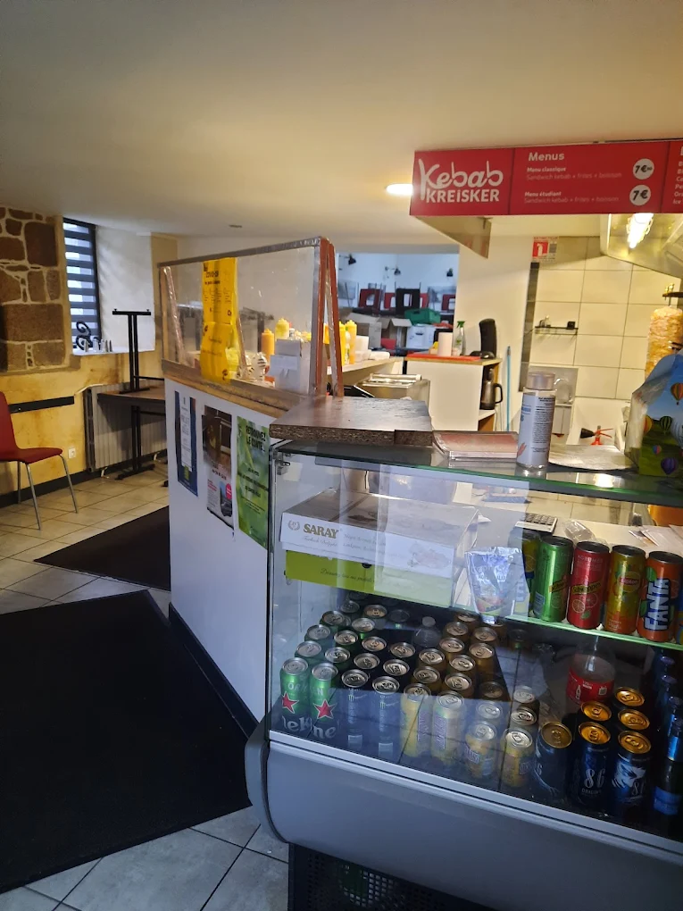
Le lieu
A l'adresse 1 Rue Cadiou, Kebab Kreisker apparait comme une table de quartier facile d'acces, pensee pour les pauses dejeuner comme pour les diners rapides. Le site reprend cette idee : une adresse directe, lisible, chaleureuse et ancree dans le centre de Saint-Pol-de-Leon.
4,8/5 sur Tripadvisor · 4 avis
491 J'aime sur Facebook : une petite adresse locale qui a deja sa communaute et ses habitues.
Cuisine turque · Dejeuner et diner · Petit budget
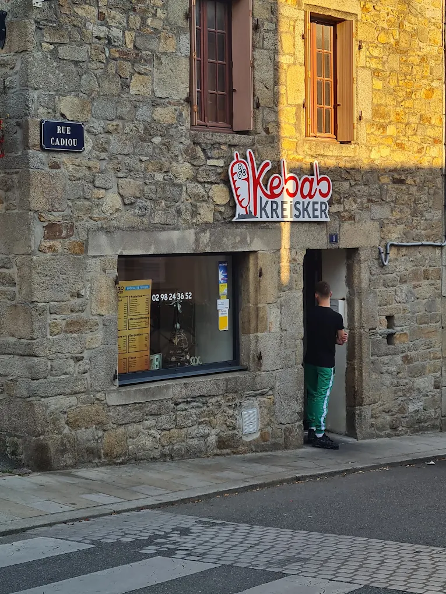
La maison
Les avis publics parlent surtout d'un bon accueil, d'une equipe souriante et de kebabs recommandes sans hesitation. J'ai donc recentre cette page sur cette promesse : une adresse conviviale, efficace et rassurante, avec une ambiance moderne mais tres accessible.
L'ambiance
Une table qui sent la braise, le pain chaud et la menthe fraiche.
Chez Kreisker Kebab, on vient aussi bien pour manger vite que pour rester un peu plus longtemps. Le service va droit au but, la salle reste vivante, et chaque assiette garde un vrai relief : broche tranchee minute, sauces qui claquent, textures nettes, et un fond de douceur orientale.
Bon accueil
Petit budget
Service rapide
L'esprit du lieu
Une adresse de quartier simple et chaleureuse, avec l'efficacite d'un comptoir et l'accueil qui revient le plus souvent dans les avis clients.
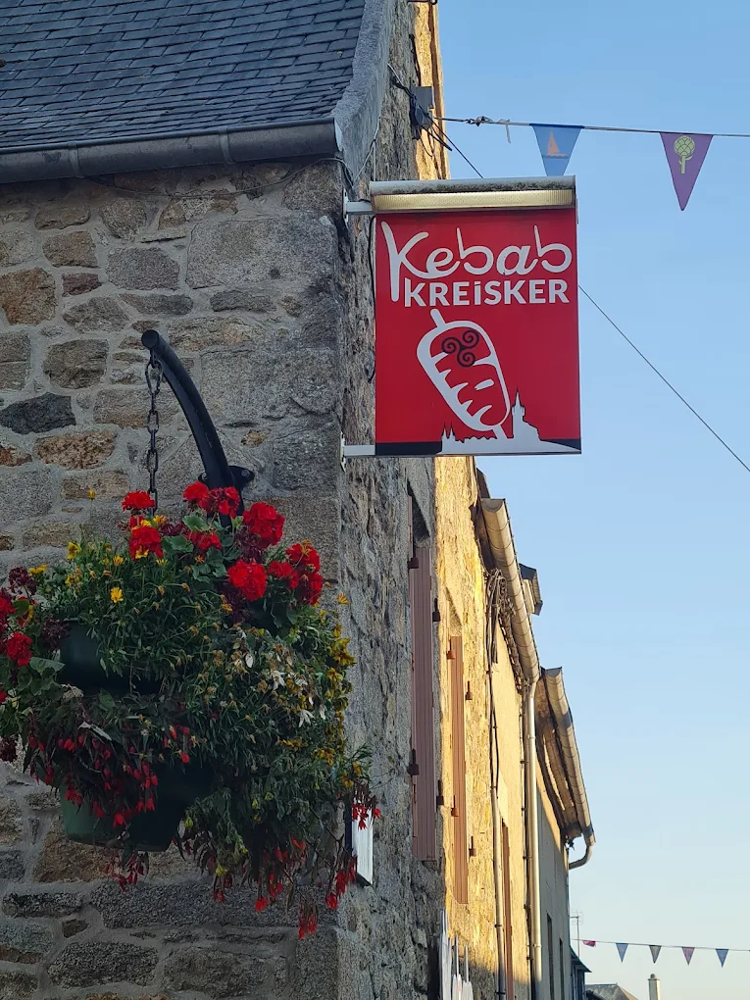
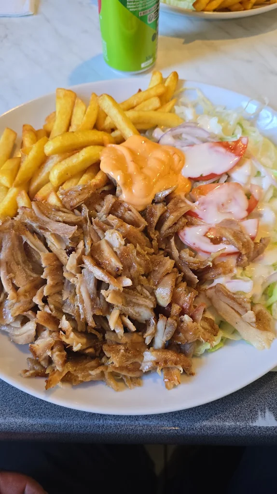
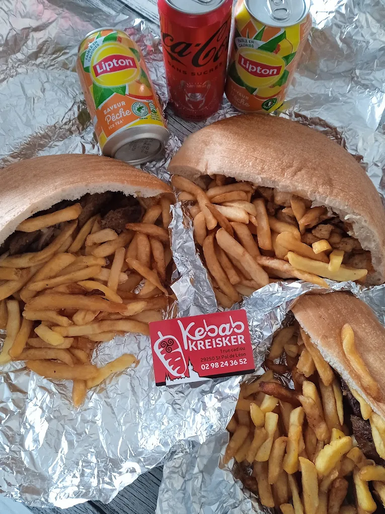
Le menu
Des categories claires, des formules lisibles et des recettes assez genereuses pour etre memorables.
Nos formules signature
Des offres pensees pour les tables du midi, les fins de service, les groupes d'amis et les envies plus genereuses.
Cuisine turque
4,8/5 sur Tripadvisor
491 J'aime Facebook
La formule a partager
34,90 EUR
2 a 3 personnes
Le Plateau Kreisker
Deux sandwiches signature, une grande barquette d'accompagnements a partager, deux boissons maison et un duo de baklavas pistache pour terminer.
Dedans
2 kebabs signature + frites cheddar menthe
En plus
2 boissons + 2 baklavas
Ideal pour deux grosses faims ou une table a partager.
Appeler pour commanderL'assiette du chef
15,90 EUR
Le soir
Broche, legumes et sauces du jour.
Une assiette plus construite pour diner tranquillement : viande tranchee minute, legumes grilles, boulgour aux herbes, pain chaud et trois sauces a picorer.
- Broche maison ou option veggie
- Legumes grilles de saison
- Boulgour menthe citron
- Mini dessert oriental
Le menu reste rapide a lire sur mobile, tout en gardant de la densite et une vraie identite de maison.
En cuisine
La broche, la braise et les sauces maison.
Ici, on montre le geste : la coupe, le pain, les sauces et la precision finale qui font toute la difference.
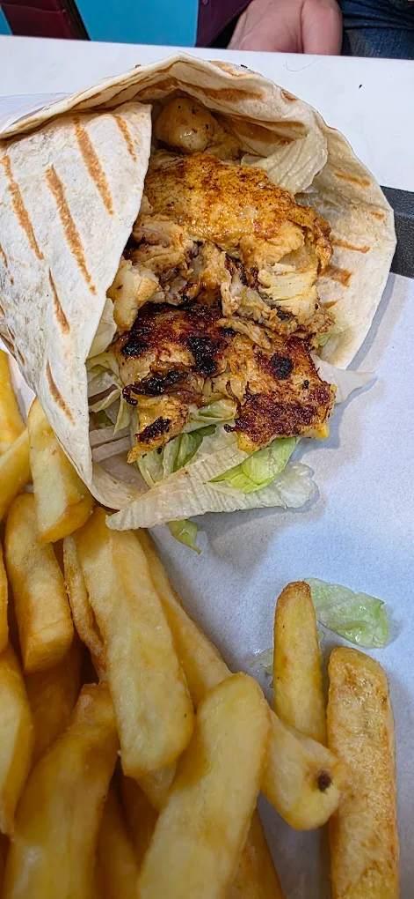
Marinade lente
La viande est assaisonnee en amont pour garder du relief apres la cuisson et une coupe plus nette au service.
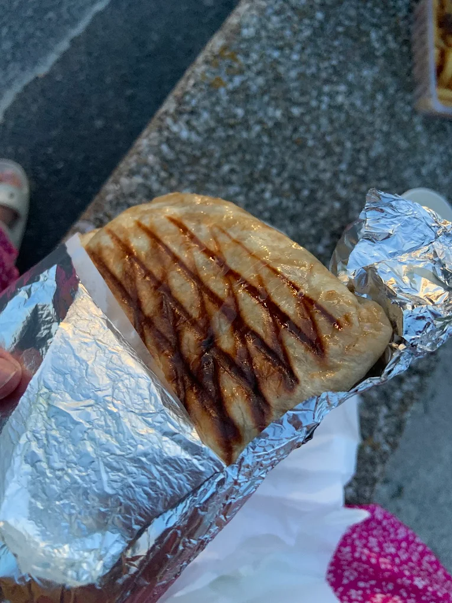
Pain dore minute
Le pain passe sur la plaque au dernier moment pour gagner en croustillant, en chaleur et en tenue.
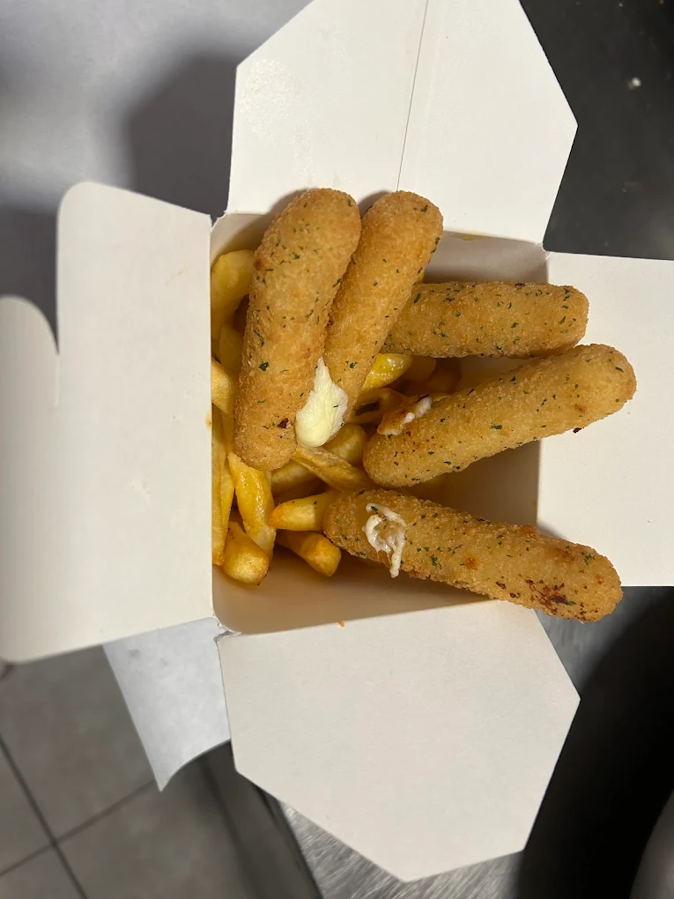
Finitions franches
Sauces, pickles, herbes et epices viennent finir chaque recette sans l'alourdir, avec juste ce qu'il faut de contraste.
Galerie
Un apercu du comptoir, de la facade, des assiettes et du service a partir des vraies photos du restaurant.
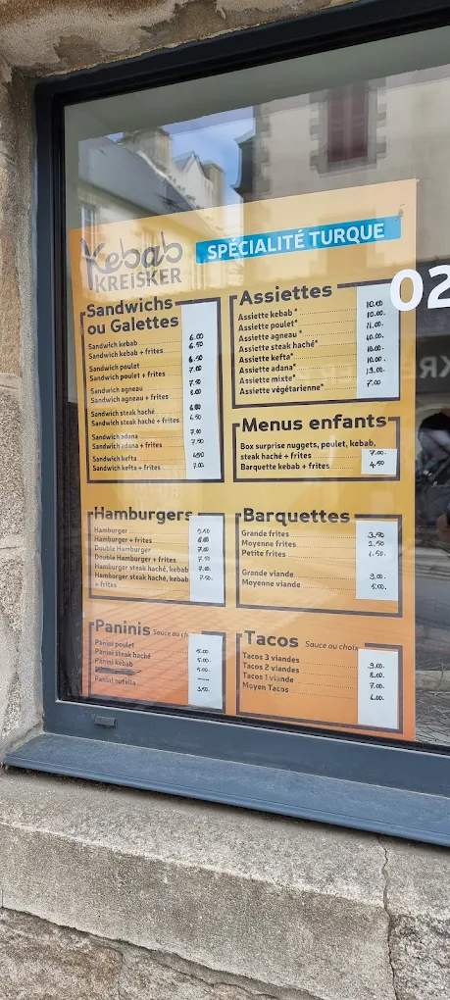
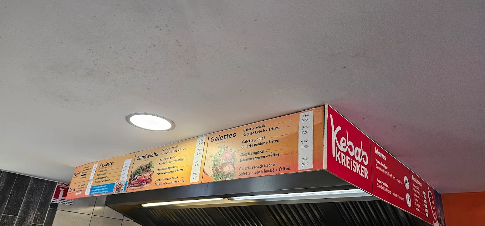
Localisation, horaires & contact
Adresse, telephone, horaires et acces direct vers l'appel, Facebook et l'itineraire.
Horaires et informations pratiques
Tout ce qu'il faut pour venir, appeler ou reperer rapidement le restaurant, sans cartes ni blocs separes.
Lundi11h45 - 14h00 / 18h00 - 22h00
Mardi11h45 - 14h00 / 18h00 - 22h00
Mercredi11h45 - 14h00 / 18h00 - 22h00
Jeudi11h45 - 14h00 / 18h00 - 22h00
Vendredi11h45 - 14h00 / 18h00 - 22h30
Samedi11h45 - 14h00 / 18h00 - 22h30
Dimanche18h00 - 22h00
Adresse
1 Rue Cadiou, 29250 Saint-Pol-de-Leon
Telephone
+33 6 95 22 19 46
Repere
Cuisine turque · Dejeuner & diner · Bon marche
Horaires publics repris depuis Tripadvisor.
Telephone
Adresse
1 Rue Cadiou
29250 Saint-Pol-de-Leon
Tripadvisor
Plan d'acces
Venir facilement
Le plan n'est charge qu'au moment utile pour garder la page legere, y compris sur mobile.